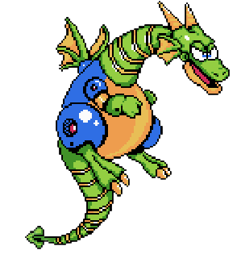
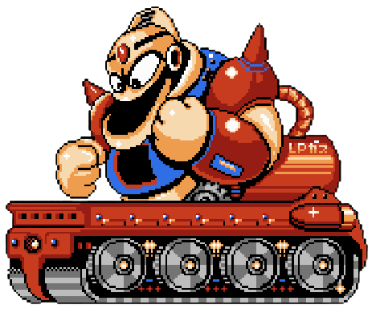
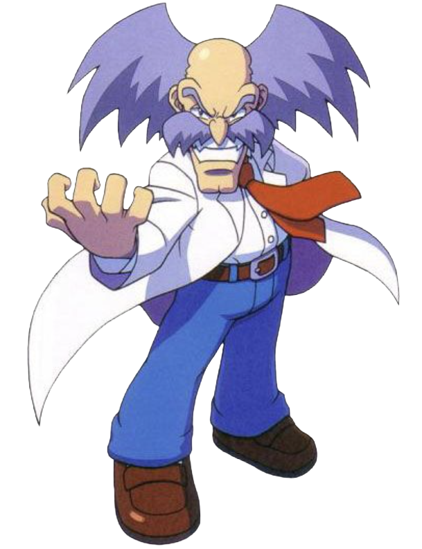

To defeat Dr. Wily in Mega Man 2, follow these strategies!
Scale the Castle:
In the first stage, players must scale the castle's outer wall, which requires careful navigation and dodging enemies like Sniper Joe.
Use Item-2:
In the second stage, players will encounter spike-lined floors that need to be crossed with Item-2.
Defeat the Bosses:
Players must defeat the bosses in each stage, including the Mecha Dragon in the first stage and Picopico-kun in the second stage.
Utilize Weapons:
Use weapons like the Bubble Lead, Crash Bomber, and Atomic Fire to deal damage to Dr. Wily.
Avoid Contact:
In the final phase, players must avoid contact with Dr. Wily's alien form to prevent damage. By following these strategies and utilizing the available weapons and items, players can successfully defeat Dr. Wily and complete the game.